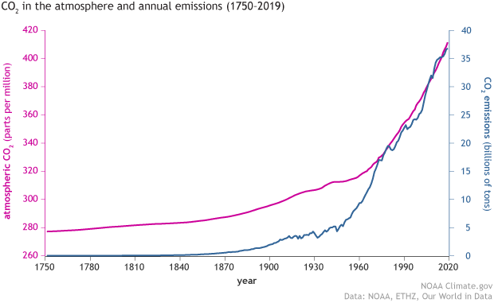

How Carbon Dioxide Affect Climate Change
By Stephanie Dela Pena and Katie Cheun, Published on April 6, 2025

Carbon dioxide (CO2) is one of the most abundant particle on Earth. It is a major greenhouse gas that is naturally in the Earth's atmosphere. Carbon dioxide affect climate change by the usage of fossil fuels, extreme weather events, trapping the Earth's heat, rising sea levels, melting ice glaciers, harming marine wildlife, and deforestation. These facts are important to note as there have been an increasing level of carbon dioxide levels over the years.
Fossil Fuel Usage
Carbon dioxide is mostly caused by burning an immense amount of fossil fuels, which are many things such as coal, oil, and gas. It accounts "for over 75 per cent of global greenhouse gas emissions and nearly 90 per cent of all carbon dioxide emissions. Many people go through fossil fuels quickly with the amount of cars." (Columbia Climate School)
Weather Events
Carbon dioxide can cause many major weather events. According to NASA, these are the weather events that may happen.
- • Marine Heat Waves
- • Wildfires
- • Droughts
- • Tropical Cyclones
- • Floods
- • High-Tide Flooding
- • Heat Extremes
It is said that these extreme weather events will escalate even further the more that the Earth's temperature warms up due to climate change. This is why there are many people around the world that is advocating to helping reduce the Earth's temperature to not reach a doom's day like scenario.
Carbon Dioxide's Trapping Heat
The main thing that carbon dioxide does it to trap heat on Earth. How this exactly happens is that "When sunlight reaches Earth, the surface absorbs some of the light's energy and reradiates it as infrared waves, which we feel as heat. These infrared waves travel up into the atmosphere and will escape back into space if unimpeded." Columbia Climate School.

Impact of Carbon Dioxide on Rising Sea Levels
Carbon dioxide (CO2) significantly contributes to rising sea levels through its role in climate change. As CO2 levels in the atmosphere increase, they trap heat, causing global temperatures to rise—a phenomenon known as the greenhouse effect. This warming leads to the melting of polar ice caps and glaciers, which directly contributes to higher sea levels. Additionally, the warming of oceans causes water to expand, further raising sea levels. The rise in sea levels has far-reaching impacts on coastal communities, ecosystems, and infrastructure.
Key reasons why carbon dioxide impacts rising sea levels:
- Melting of polar ice caps and glaciers: Higher temperatures cause ice to melt, adding more water to the oceans.
- Thermal expansion of seawater: As ocean water warms, it expands, contributing to rising sea levels.
- Disruption of natural carbon cycles: Excess CO2 affects carbon storage in oceans, increasing the amount of CO2 that contributes to warming.
- Changes in precipitation patterns: CO2-driven climate shifts affect weather patterns, influencing the flow of water into the oceans and exacerbating rising sea levels.
Further Reading on Atmospheric Carbon Dioxide
To understand the role of atmospheric carbon dioxide in climate change and how it contributes to rising sea levels, you can explore more detailed information provided by the Climate.gov article on Atmospheric Carbon Dioxide.

Impact of Melting Glaciers Caused by CO2
The melting of glaciers caused by the increase in carbon dioxide (CO2) in the atmosphere is a direct consequence of global warming. As CO2 levels rise due to human activities like burning fossil fuels, more heat is trapped in the Earth's atmosphere, causing global temperatures to climb. This warming accelerates the melting of glaciers, particularly in polar regions and high-altitude areas, where ice sheets are shrinking at alarming rates. The loss of glaciers contributes to rising sea levels, as the melted ice flows into the ocean. Additionally, the melting of glaciers can disrupt local ecosystems that depend on the cold, freshwater environments glaciers provide, affecting both wildlife and human communities. Moreover, glaciers play a role in reflecting sunlight, so their reduction exposes more dark land or water, which absorbs more heat and exacerbates the warming effect, creating a feedback loop that further accelerates the melting process.
Key Facts About Melting Glaciers and CO2:
- Global Warming: Rising CO2 levels trap heat in the atmosphere, causing temperatures to increase and glaciers to melt faster.
- Rising Sea Levels: Melting glaciers contribute to higher sea levels by releasing water into the oceans.
- Ecosystem Disruption: Glaciers provide vital freshwater to ecosystems, and their loss impacts plant and animal species dependent on cold, freshwater habitats.
- Reflection of Sunlight: Glaciers reflect sunlight, helping cool the Earth. As they melt, more dark land or water is exposed, absorbing more heat and accelerating warming.
- Feedback Loop: The reduction of glaciers leads to more heat absorption by the Earth's surface, which then accelerates global warming, causing further melting.
Further Reading on CO2 and Ice Ages
To understand how the rise and fall of CO2 levels influenced the Ice Ages, you can explore the detailed explanation provided by Carbon Brief.

Impact of Carbon Dioxide on Harming Marine Life
The rising levels of carbon dioxide (CO2) in the atmosphere not only contribute to global warming but also have detrimental effects on marine life. As CO2 is absorbed by oceans, it reacts with water to form carbonic acid, leading to ocean acidification. This process lowers the pH of the water, disrupting the ability of marine organisms, such as corals, shellfish, and plankton, to form calcium carbonate shells and skeletons. Ocean acidification weakens these organisms, which are crucial to marine ecosystems, and threatens biodiversity. Additionally, the warming of the oceans, driven by increased CO2, disrupts marine habitats, endangers species, and affects the food chain. As ocean conditions change, it becomes harder for marine life to survive and thrive, posing a threat to both ocean health and the communities that depend on marine resources.
Key Facts About CO2's Impact on Marine Life:
- Ocean Acidification: CO2 absorbed by the oceans forms carbonic acid, lowering the water's pH and affecting marine life that relies on calcium carbonate.
- Coral Bleaching: Higher CO2 levels increase sea temperatures, stressing coral reefs, leading to bleaching and weakening coral ecosystems.
- Weakened Shellfish: Acidic waters interfere with the ability of shellfish, like oysters and mussels, to form protective shells.
- Disrupted Food Chain: Ocean acidification and temperature changes can reduce the availability of plankton, which are a primary food source for many marine species.
- Loss of Biodiversity: The combination of acidification and warming disrupts habitats, putting a wide range of marine species at risk of extinction.
Further Reading on Ocean Acidification
To learn more about how CO2 is affecting the oceans and marine life, you can read the detailed article from NOAA on Ocean Acidification.